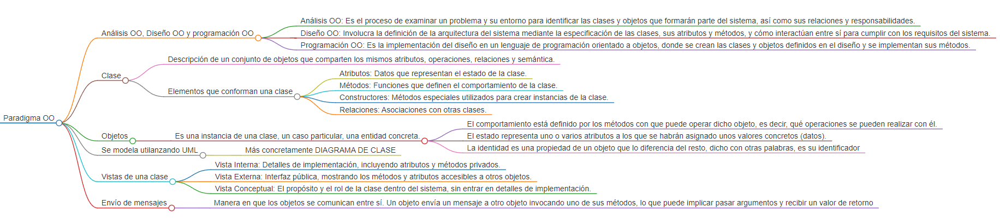

Conjunto de teorías, estándares, métodos que, unificados, representan una forma de organizar el conocimiento.
Forma de “ver” y “entender” el mundo, es una forma de abstraerlo dentro de nuestra cabeza.
• Componentes independientes y altamente reutilizables. • Comunicación mediante colaboraciones. • Bloques de construcción 🡪 objetos y clases.
Los objetos administran sus propios datos y son responsables de sus propias funciones.
Ayuda a combatir la complejidad.
Análisis OO: Es el proceso de examinar un problema y su entorno para identificar las clases y objetos que formarán parte del sistema, así como sus relaciones y responsabilidades.
Diseño OO: Involucra la definición de la arquitectura del sistema mediante la especificación de las clases, sus atributos y métodos, y cómo interactúan entre sí para cumplir con los requisitos del sistema.
Programación OO: Es la implementación del diseño en un lenguaje de programación orientado a objetos, donde se crean las clases y objetos definidos en el diseño y se implementan sus métodos.
El paradigma de objetos maneja la complejidad mediante la abstracción, encapsulamiento, modularidad y jerarquía. La abstracción permite centrarse en aspectos relevantes del problema; el encapsulamiento oculta detalles internos de los objetos; la modularidad divide el sistema en partes manejables y la jerarquía de clases organiza el sistema en diferentes niveles.
Descripción de un conjunto de objetos que comparten los mismos atributos, operaciones, relaciones y semántica.
Alumno, Bebida, Vehículo, etc.
Es una instancia de una clase, un caso particular, una entidad concreta.
“Los objetos son entidades del mundo real que combinan estado, comportamiento e identidad”
Mateo Letona, Coca Cola, Ciclomotor, etc.
Las características de un objeto son sus atributos. Estos son dependientes del dominio del problema.
En la clase Alumno no nos interesa saber su color de pelo o no es redundante para el sistema.
Extraer las propiedades esenciales de un objeto que lo distinguen de los demás tipos de objetos y proporciona fronteras conceptuales definidas respecto al punto de vista del observador, en un determinado dominio del problema.
Clase Vehículo $\rightarrow$ Ruedas, Motor, Asientos
En una clase Tarjeta, sería conveniente ocultar atributos como el número, el CVV.
Orden de abstracción organizado por niveles.
La clase animal se crean las subclases de perro, gato, etc. Tambien podriamos tener mas subclases diferenciando los animales por reinos y otras caracteristicas.
Características precisas que comparten una serie de objetos. Puesta en vigencia de la clase de los objetos.
Auto sus atributos serian: marca, modelo, color
Permite a diferentes objetos actuar al mismo tiempo. Distingue objetos activos de inactivos.
En un sistema operativo, la concurrencia es nesesaria para el funcionamiento de multiples programas al mismo tiempo
Cantidad de espacio que ocupa y tiempo que dura un objeto. Conservación del estado del objeto en el espacio y en el tiempo.
En una biblioteca, la persistencia permite guardar Libros y Préstamos en un almacenamiento para luego poder ser consultado.
Las clases se identifican a través del análisis de requisitos y del entendimiento del dominio del problema y son todo aquello que se necesita que el sistema administre dentro del dominio de análisis.
Un ayuda memoria podria ser buscar dentro del dominio del problema
Cosas tangibles, Personas, Lugares, Transacciones u operaciones, Hechos o eventos, Otras organizaciones o áreas